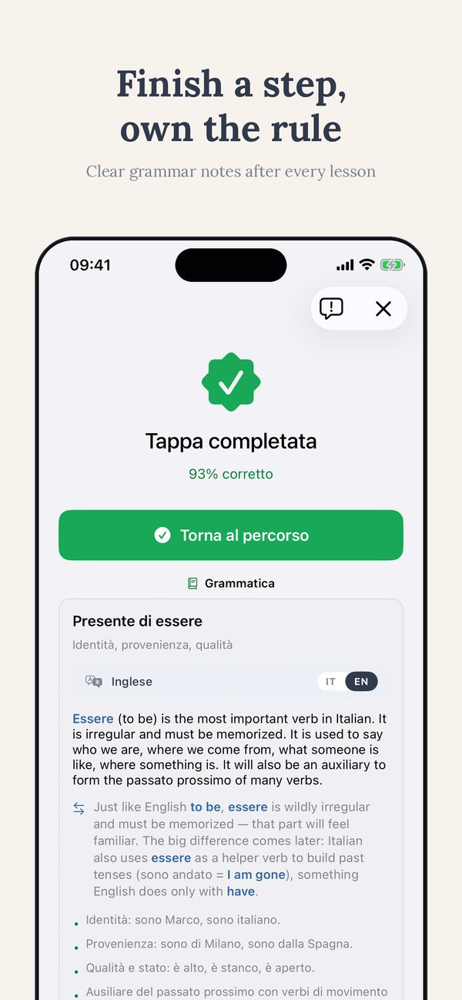

Online lessons · Thuis Italiaans
How to choose an online Italian teacher
Marketplaces list thousands of profiles. Price and a smiling photo tell you almost nothing. Here are the seven questions that do, from a teacher who reads those profiles too.
The first trial lesson is free, online from anywhere
Book a free trial lessonToo much choice is also a problem
Search for an online Italian tutor and you get thousands of profiles, sorted by an algorithm, filtered by price. The photos smile, the intro videos are warm, the reviews are five stars almost everywhere, because unhappy students quietly leave instead of writing reviews. So how do you actually choose?
Start by dropping one assumption: that a native speaker is automatically a teacher. You speak your own native language perfectly. Could you explain, right now, why its grammar works the way it does, to a confused adult, in simple words? Speaking a language and teaching it are two different professions. The questions below are how you tell them apart.
The 7 questions
1. Is teaching Italian their profession or a side gig? There are real qualifications for teaching Italian to foreigners: DITALS, CEDILS, and full ITALS master's degrees. They are not gatekeeping. Training changes what happens in the moment you are stuck: a trained teacher recognises why you are stuck and has three ways out, not one.
2. Do they assess before they teach? A good first lesson is mostly listening: your level, your goal, your history with languages. A bad first lesson is a package pitch. If nobody has located your starting point, any plan is a guess.
3. Can they explain why, in a language you understand? At A1 and A2 you sometimes need grammar explained clearly, in English if needed. “You will absorb it naturally” is a method for children with years of time, not for an adult with three hours a week.
4. Do the lessons have a thread? Each lesson should build on the last one. Ask how they keep track of what you did, what you got wrong, what comes next. If every lesson starts from zero, you are paying for fifty first lessons.
5. What happens between lessons? The six days between two lessons decide your speed more than the lesson itself. A serious teacher has an answer ready: homework from your mistakes, exercises, graded reading, an app that continues the path.
6. Does the material adapt to you? Italian for travel, Italian for citizenship, Italian for work: these are different courses. If every student gets the same PDF, you are student number forty, not a person with a goal.
7. Can you try before committing? A trial lesson tells you more than fifty reviews. In the trial, watch two things: who talks more, and whether you leave knowing your level and your next step.
The red flags
- Promises with dates. “Fluent in three months” is marketing, not linguistics. Progress has a speed, and it depends on hours, not on slogans.
- No questions about you. If the first lesson contains no questions about your goals, the course was written before you arrived.
- Only chat, no correction. Pleasant conversation without feedback is a language exchange. It has its place, and it is free elsewhere.
- No visible method between lessons. If the answer to “what do I do until next week?” is a shrug, the six days between lessons are lost.
How I work, for transparency
Since I am writing this, you should know where I stand. I hold two master's degrees specifically in teaching Italian: the ITALS master at Università Ca' Foscari in Venice for Italian taught abroad, and a master at Università Giustino Fortunato on Italian as a second language, with a thesis on the online class. I have taught online and in person since 2019, from the Netherlands, with students across time zones. My prices are public, the first trial lesson is free, and between lessons my students use the Ti app and the 700+ free exercises on this site. If after the trial you think someone else fits you better, I will tell you what to look for. This page is that list.
Test the seven questions on me
A free trial lesson, online, no obligation. You leave knowing your level and your next step, whoever you end up studying with.
The first trial lesson is free, online from anywhere
Book a free trial lessonCommon questions
Is a native speaker automatically better?
No. Native command of Italian is necessary for high levels, but at A1 to B1 the skill that matters most is explaining, and that is trained, not inherited. The ideal is a trained teacher with native or near-native Italian.
How much do online Italian lessons cost?
On marketplaces, anywhere from 10 to 60+ euros per hour, and price correlates weakly with quality in the middle of that range. Compare cost per progress, not cost per hour: a structured lesson with follow-up is cheaper than two pleasant chats.
Private or group lessons online?
Private moves faster per hour, because you speak most of the time. Group is cheaper and adds a social side. A common pattern that works: private lessons plus daily self-study with an app or graded readers.
The trial lesson answers most of this
One free online lesson: we find your level, your goal, and what a realistic plan looks like. Then you decide, with better information than any profile page gives you.
The first trial lesson is free and without obligation
Book a free trial lesson


See Ti in action
The CEFR path, exercises, edicola and graded Italian classics — from A1 to C2, in 14 languages.



More from Thuis Italiaans
Graded readers by level · Italian lessons online · 700+ free exercises